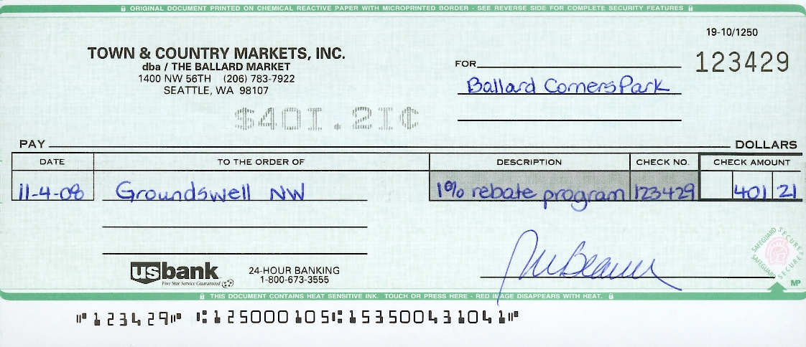

<?xml version="1.0" encoding="UTF-8"?><rss version="2.0"
	xmlns:content="http://purl.org/rss/1.0/modules/content/"
	xmlns:wfw="http://wellformedweb.org/CommentAPI/"
	xmlns:dc="http://purl.org/dc/elements/1.1/"
	xmlns:atom="http://www.w3.org/2005/Atom"
	xmlns:sy="http://purl.org/rss/1.0/modules/syndication/"
	xmlns:slash="http://purl.org/rss/1.0/modules/slash/"
	>

<channel>
	<title>Fundraising &#8211; Friends of Ballard Corners Park</title>
	<atom:link href="http://ballardcornerspark.org/ballardcornerspark/category/fundraising/feed/" rel="self" type="application/rss+xml" />
	<link>http://ballardcornerspark.org/ballardcornerspark</link>
	<description>Just another WordPress weblog</description>
	<lastBuildDate>Tue, 12 Apr 2016 16:55:53 +0000</lastBuildDate>
	<language>en-US</language>
	<sy:updatePeriod>hourly</sy:updatePeriod>
	<sy:updateFrequency>1</sy:updateFrequency>
	<generator>https://wordpress.org/?v=4.7.2</generator>
	<item>
		<title>The Season of Consuming is upon us&#8230;</title>
		<link>http://ballardcornerspark.org/ballardcornerspark/2013/12/the-season-on-consuming-is-upon-us/</link>
		<pubDate>Mon, 02 Dec 2013 05:03:03 +0000</pubDate>
		<dc:creator><![CDATA[master]]></dc:creator>
				<category><![CDATA[Fundraising]]></category>

		<guid isPermaLink="false">http://ballardcornerspark.org/ballardcornerspark/?p=1786</guid>
		<description><![CDATA[Remember every little you spend via our Amazon sponsorship link: http://www.amazon.com/?%5Fencoding=UTF8&#038;tag=ballardcorner-20&#038;linkCode=sb1 &#8230;continues to collect about 4% in referral fees and this money goes into our kitty. The money continues to be managed by Groundswell and helps pay for our work parties, tile and plaque restoration without exceptional fund raising. So please remember us this Holiday [&#8230;]]]></description>
				<content:encoded><![CDATA[<p>Remember every little you spend via our Amazon sponsorship link:</p>
<p><a href="http://www.amazon.com/?%5Fencoding=UTF8&#038;tag=ballardcorner-20&#038;linkCode=sb1">http://www.amazon.com/?%5Fencoding=UTF8&#038;tag=ballardcorner-20&#038;linkCode=sb1</a></p>
<p>&#8230;continues to collect about 4% in referral fees and this money goes into our kitty.</p>
<p>The money continues to be managed by Groundswell and helps pay for our work parties, tile and plaque restoration without exceptional fund raising.  So please remember us this Holiday season and Cyber Monday.</p>
]]></content:encoded>
			</item>
		<item>
		<title>Donations to Other Non-Profits</title>
		<link>http://ballardcornerspark.org/ballardcornerspark/2010/05/donations-to-other-non-profits/</link>
		<pubDate>Mon, 17 May 2010 16:43:47 +0000</pubDate>
		<dc:creator><![CDATA[David Folweiler]]></dc:creator>
				<category><![CDATA[Fundraising]]></category>

		<guid isPermaLink="false">http://ballardcornerspark.org/ballardcornerspark/?p=1113</guid>
		<description><![CDATA[When we were done paying all our bills, we had a few thousand dollars left over.  Two other non-profits helped us and we wanted to thank them.  We gave $400 to Ballard Boys &#38; Girls Club for letting us meet in their building and another $400 to the Ballard Historical Society for providing the cool [&#8230;]]]></description>
				<content:encoded><![CDATA[<p>When we were done paying all our bills, we had a few thousand dollars left over.  Two other non-profits helped us and we wanted to thank them.  We gave $400 to <a title="Ballard B &amp; G Club" href="http://www.ballard.positiveplace.org/" target="_blank">Ballard Boys &amp; Girls Club</a> for letting us meet in their building and another $400 to the <a title="Ballard Historical Society" href="http://www.ballardhistory.org/" target="_blank">Ballard Historical Society</a> for providing the cool historical photos in the corner store and helping edit the interpretive panels.</p>
<p>The Boys &amp; Girls Club sent us this letter in return.</p>
<p><a href="../../../wp-content/uploads/2010/05/Ballard-Boys-Girls-Club-thank-you-letter-for-donation.jpg"></a></p>
]]></content:encoded>
			</item>
		<item>
		<title>Donation to Others</title>
		<link>http://ballardcornerspark.org/ballardcornerspark/2010/04/donation-to-others/</link>
		<pubDate>Fri, 30 Apr 2010 05:56:40 +0000</pubDate>
		<dc:creator><![CDATA[David Folweiler]]></dc:creator>
				<category><![CDATA[Fundraising]]></category>
		<category><![CDATA[Meetings]]></category>

		<guid isPermaLink="false">http://ballardcornerspark.org/ballardcornerspark/?p=1103</guid>
		<description><![CDATA[It is a bit odd.  We are an organization with no financial assets.  The Friends of Ballard Corners has no bank account, no officers (on paper), no board, no nothing.  We rely on Groundswell NW to handle all our money as our &#8220;fiscal sponsor&#8221;.  Any money we receive goes straight to them.  Any money we [&#8230;]]]></description>
				<content:encoded><![CDATA[<div id="attachment_1107" style="width: 310px" class="wp-caption alignnone"><a href="../../../wp-content/uploads/2010/04/DSC06984.JPG"></a><p class="wp-caption-text">corner store is open!</p></div>
<p>It is a bit odd.  We are an organization with no financial assets.  The Friends of Ballard Corners has no bank account, no officers (on paper), no board, no nothing.  We rely on Groundswell NW to handle all our money as our &#8220;fiscal sponsor&#8221;.  Any money we receive goes straight to them.  Any money we &#8220;spend&#8221; comes straight from them.  In return, they receive a 5% cut of all our donations &#8211; this helps them fund their operations.</p>
<p>It seems strange to me that we would give money from our account at a non-profit to another non-profit.  No one gets a write-off.  But, nonetheless, we were inclined to want to thank two organizations &#8211; <a title="Ballard Boys &amp; Girls Club" href="http://www.ballard.positiveplace.org/" target="_blank">Ballard Boys &amp; Girls Club</a> and <a title="Ballard Historical Society" href="http://www.ballardhistory.org/" target="_blank">Ballard Historical Society</a> for their help.</p>
<p>The Ballard Boys &amp; Girls Club hosted virtually all of our meetings, including the large public meetings.  The Ballard Historical Society helped with our historical photos and writing up the verbiage of the panels.  In return, we wanted to support them.  We did it with profuse thanks and a check for $400 each.</p>
]]></content:encoded>
			</item>
		<item>
		<title>We&#8217;re official &#8211; Grand Opening &#8211; we&#8217;re open!</title>
		<link>http://ballardcornerspark.org/ballardcornerspark/2009/10/were-official-grand-opening-were-open/</link>
		<pubDate>Sun, 11 Oct 2009 04:36:36 +0000</pubDate>
		<dc:creator><![CDATA[gordon]]></dc:creator>
				<category><![CDATA[Current State]]></category>
		<category><![CDATA[Fundraising]]></category>
		<category><![CDATA[History]]></category>
		<category><![CDATA[Mentioned elsewhere]]></category>
		<category><![CDATA[News]]></category>

		<guid isPermaLink="false">http://ballardcornerspark.org/ballardcornerspark/?p=861</guid>
		<description><![CDATA[Today was the Grand Opening at the park. We had an extremely large turnout, the full stack of US governance from community to city to state to the Senator, and there were many thanks all round. Thanks to the supporters on the day, with a special thanks from my belly to Veraci Pizza who served [&#8230;]]]></description>
				<content:encoded><![CDATA[<p>Today was the Grand Opening at the park.</p>
<p>We had an extremely large turnout, the full stack of US governance from community to city to state to the Senator, and there were many thanks all round.</p>
<p>Thanks to the supporters on the day, with a special thanks from my belly to <a href="http://www.veracipizza.com/">Veraci Pizza</a> who served free pizza for an hour and a half to a very happy line of pizza-lovers.</p>
<p>More pictures will be posted forthwith, but for now feel free to read the timely report on <a href="http://www.myballard.com/2009/10/10/ballards-newest-park-officially-opens/">myballard</a>.</p>
]]></content:encoded>
			</item>
		<item>
		<title>Mac Users Pay Attention</title>
		<link>http://ballardcornerspark.org/ballardcornerspark/2009/08/mac-users-pay-attention/</link>
		<pubDate>Sun, 16 Aug 2009 17:15:30 +0000</pubDate>
		<dc:creator><![CDATA[gordon]]></dc:creator>
				<category><![CDATA[Fundraising]]></category>

		<guid isPermaLink="false">http://ballardcornerspark.org/ballardcornerspark/?p=770</guid>
		<description><![CDATA[Buy the new Mac Snow Leopard with this link &#8211; Snow Leopard Pre-Order&#8211; and associates money will go to the park!]]></description>
				<content:encoded><![CDATA[<p>Buy the new Mac Snow Leopard with this link &#8211; <a href="http://www.amazon.com/gp/redirect.html?ie=UTF8&#038;location=https%3A%2F%2Fwww.amazon.com%2Fs%3Fie%3DUTF8%26x%3D0%26ref%255F%3Dnb%255Fss%255F0%255F7%26y%3D0%26field-keywords%3Dsnow%2520leopard%26url%3Dsearch-alias%253Daps%26sprefix%3Dsnow%2520le&#038;tag=ballardcorner-20&#038;linkCode=ur2&#038;camp=1789&#038;creative=390957">Snow Leopard Pre-Order</a>&#8211; and associates money will go to the park!</p>
]]></content:encoded>
			</item>
		<item>
		<title>Amazon update</title>
		<link>http://ballardcornerspark.org/ballardcornerspark/2009/07/amazon-update/</link>
		<pubDate>Tue, 28 Jul 2009 05:13:57 +0000</pubDate>
		<dc:creator><![CDATA[gordon]]></dc:creator>
				<category><![CDATA[Fundraising]]></category>

		<guid isPermaLink="false">http://ballardcornerspark.org/ballardcornerspark/?p=750</guid>
		<description><![CDATA[I&#8217;m sitting here doing some totals and cutting a check and thought I&#8217;d give everyone an update on our referral fees from Amazon.com. You may recall that if you use the links to the left of this page, or our ballardcornerspark.org/shop links, or this amazon.com/?tag=ballardcorner-20 link, we receive a percentage (4-10%) on items purchased (the [&#8230;]]]></description>
				<content:encoded><![CDATA[<p>I&#8217;m sitting here doing some totals and cutting a check and thought I&#8217;d give everyone an update on our referral fees from Amazon.com.</p>
<p>You may recall that if you use the links to the left of this page, or our <a href="http://ballardcornerspark.org/shop">ballardcornerspark.org/shop</a> links, or this <a href="http://amazon.com/?tag=ballardcorner-20">amazon.com/?tag=ballardcorner-20</a> link, we receive a percentage (4-10%) on items purchased (the 10% is for mp3&#8217;s).</p>
<p>So far this year, our industrious shoppers have defied the recession and raised about $200 in referral fees from 76 items and almost $4000.</p>
<p>If you want to shop, shop Amazon with our <a href="http://amazon.com/?tag=ballardcorner-20">link</a>.</p>
]]></content:encoded>
			</item>
		<item>
		<title>Groceries from Amazon?</title>
		<link>http://ballardcornerspark.org/ballardcornerspark/2009/04/groceries-from-amazon/</link>
		<pubDate>Thu, 09 Apr 2009 14:24:20 +0000</pubDate>
		<dc:creator><![CDATA[gordon]]></dc:creator>
				<category><![CDATA[Fundraising]]></category>
		<category><![CDATA[Misc.]]></category>

		<guid isPermaLink="false">http://ballardcornerspark.org/ballardcornerspark/?p=639</guid>
		<description><![CDATA[Not really my thing, but currently they have some great special offers that, as always, make money for the park if you USE OUR LINKS. Natural and Organic Groceries – Save $15 and get a free Earthwise shopping bag when you spend $59 or more on a huge eligible selection of natural and organic groceries [&#8230;]]]></description>
				<content:encoded><![CDATA[<p>Not really my thing, but currently they have some great special offers that, as always, make money for the park if you <a href="http://www.amazon.com/b/?node=52129011&#038;tag=ballardcorner-20">USE OUR LINKS</a>.</p>
<ul>
<li><b><a href="http://www.amazon.com/gp/feature.html?docId=1000352611&#038;tag=ballardcorner-20">Natural and Organic Groceries</a></b> – Save $15 and get a free Earthwise shopping bag when you spend $59 or more on a huge eligible selection of natural and organic groceries including Newman’#39;s Own, Kashi, and more
<li><b><a href=" http://www.amazon.com/gp/feature.html?docId=1000358141&#038;tag=ballardcorner-20">Quaker</a></b> &#8211; Save $25 when you spend $69 or more on eligible Quaker brands including Quaker oatmeal, Gatorade, Izze, and many more
<li><b><a href="http://www.amazon.com/gp/feature.html?docId=1000345151&#038;tag=YOUR_ID_HERE-20">TastyBaby</a></b> &#8211; No, not delectable juicy, chunky babies to barbecue, rather save $20 when you spend $49 or more on eligible Tastybaby organic frozen baby food
</ul>
]]></content:encoded>
			</item>
		<item>
		<title>Yeah, Ballard Market!</title>
		<link>http://ballardcornerspark.org/ballardcornerspark/2008/11/yeah-ballard-market/</link>
		<pubDate>Mon, 10 Nov 2008 19:52:03 +0000</pubDate>
		<dc:creator><![CDATA[David Folweiler]]></dc:creator>
				<category><![CDATA[Fundraising]]></category>

		<guid isPermaLink="false">http://ballardcornerspark.org/ballardcornerspark/?p=508</guid>
		<description><![CDATA[Your receipts become cash for the park.  Gabriella recently handed in over $40,000 worth of receipts, which became this check.  Thanks, Ballard Market!]]></description>
				<content:encoded><![CDATA[<p><a href="../../../wp-content/uploads/2008/11/ballard-market-check.jpg"></a></p>
<p>Your receipts become cash for the park.  Gabriella recently handed in over $40,000 worth of receipts, which became this check.  Thanks, Ballard Market!</p>
]]></content:encoded>
			</item>
		<item>
		<title>Tile Design</title>
		<link>http://ballardcornerspark.org/ballardcornerspark/2008/09/tile-design/</link>
		<pubDate>Mon, 29 Sep 2008 16:44:59 +0000</pubDate>
		<dc:creator><![CDATA[David Folweiler]]></dc:creator>
				<category><![CDATA[Fundraising]]></category>

		<guid isPermaLink="false">http://ballardcornerspark.org/ballardcornerspark/?p=351</guid>
		<description><![CDATA[Check out the tile design!  We are selling tiles to help raise funds for the park and create a sense of ownership/stewardship.  You can order tiles by contacting Rebecca Carr.  They sell for $100 each.  Be creative!  You don&#8217;t have to put your name.  You can put a quote or saying such as these on [&#8230;]]]></description>
				<content:encoded><![CDATA[<p style="text-align: left;"><a title="larger pdf of this image" href="../../../../images/tile&#32;sample.pdf" target="_blank"></a></p>
<p style="text-align: left;">Check out <a title="Tile Sample (pdf)" href="../../../../images/tile&#32;sample.pdf" target="_blank">the tile design</a>!  We are selling tiles to help raise funds for the park and create a sense of ownership/stewardship.  You can order tiles by contacting <a title="Rebecca Carr (email)" href="mailto:rebecca.carr@ballardcornerspark.org">Rebecca Carr</a>.  They sell for $100 each.  Be creative!  You don&#8217;t have to put your name.  You can put a quote or saying such as these on the tile:</p>
<p style="text-align: left;">&#8220;Bloom where you are planted&#8221;<br />
&#8220;Cultivate the garden within&#8221;<br />
&#8220;Flowers feed the soul&#8221;<br />
&#8220;If friends were flowers, I&#8217;d pick you&#8221;</p>
]]></content:encoded>
			</item>
		<item>
		<title>What can you do with $16,678 worth of Ballard Market Receipts?</title>
		<link>http://ballardcornerspark.org/ballardcornerspark/2008/04/what-can-you-do-with-16678-worth-of-ballard-market-receipts/</link>
		<pubDate>Mon, 21 Apr 2008 17:15:23 +0000</pubDate>
		<dc:creator><![CDATA[David Folweiler]]></dc:creator>
				<category><![CDATA[Fundraising]]></category>

		<guid isPermaLink="false">http://ballardcornerspark.org/ballardcornerspark/?p=267</guid>
		<description><![CDATA[We just received a check from Ballard Market. For every receipt we give back to them, they give 1% of the purchase amount for the park. Gabriella recently turned $16,678 worth of receipts into a check for $166.78. Easy money! Thanks, Gabriella and Ballard Market! into]]></description>
				<content:encoded><![CDATA[<p>We just received a check from <a href="http://www.townandcountrymarkets.com/ballard/location.html">Ballard Market</a>.  For every receipt we give back to them, they give 1% of the purchase amount for the park.  Gabriella recently turned $16,678 worth of receipts into a check for $166.78.  Easy money!  Thanks, Gabriella and Ballard Market!</p>
<p></p>
<p>into</p>
<p><a href='../../../wp-content/uploads/2008/04/ballard-market-check1.jpg'></a></p>
]]></content:encoded>
			</item>
	</channel>
</rss>
